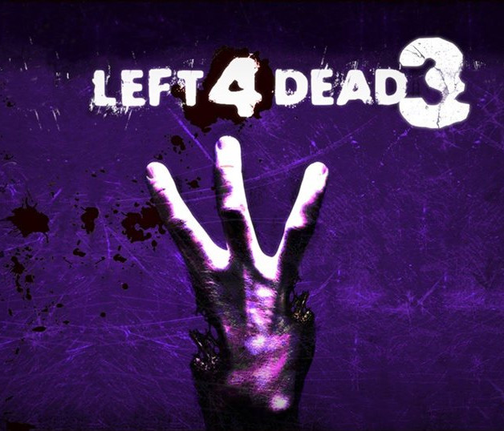
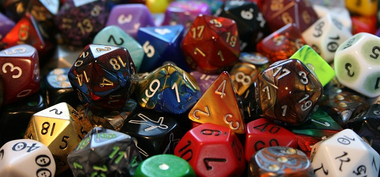
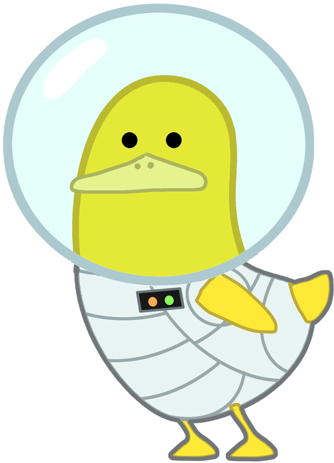

Demandez le programme

Ça y est il était déjà beau, mais maintenant il est complet ! N'hésitez pas à aller découvrir ou redécouvrir le programme définitif de la convention. Un programme très riche avec plein de tournois, de conférences, d'ateliers, d'animations en tout genre.
Découvrez aussi la liste complète des invités et des animations proposées tout au long de cette convention. De quoi pleinement satisfaire petits et grands.
Inscription au Left for Dead

Amis humains, amis zombies,
Ça y est, votre heure est arrivée, l'inscription pour le grand combat final et l'heure de l'affrontement est arrivé!
Les inscriptions pour le Left for Dead sont ouvertes. Alors que vous vouliez jouer un survivant ou un zombie c'est le moment inscrivez-vous. Cette année c'est un nouveau format qui vous sera proposé, il y aura une seule et unique partie pendant la soirée qui durera pendant plusieurs heures. Alors prévoyez votre soirée du jeudi 29 octobre et n'attendez plus, inscrivez-vous, en cliquant ici.
Retrouvez plus d'informations sur l'événement facebook, ou sur la page inscription aux événements
Appel à MJ
Oyez Oyez, chers amis MJ!

L'appel à MJ pour la convention a été lancé. Si vous souhaitez materiser un jeu de rôle pendant la convention, vous pouvez vous inscrire sur ce formulaire .
Attention, étant limité en nombre de salles disponibles pour le jeu de rôle, nous ne pourrons pas forcement satisfaire toutes les demandes, ainsi une inscription n'équivaut pas à une place de MJ.
La date limite pour l'inscription est fixée au 26 octobre. Aucune demande ultérieure ne poura être prise en compte.
Retrouvez les informations et le formulaire d'inscription sur la page inscriptions aux événements
Devenez bénévole

Vous avez envie de vous investir dans l'organisation de la convention, donner un coup de main le jour J, expliquer des jeux, accueillir les festivaliers, servir à manger et à boire aux joueurs, faire du maquillage ou encore prendre des photos.
Il y a plein de choses à faire et de moyen de s'investir. Pour avoir plus d'informations et pour s'inscrire, rendez-vous sur la page bénévole, en cliquant ici
Concours cosplay
Le samedi 31 de 14h30 à 16h sera organisé un concours cosplay. Un concours cosplay sur le thème pirate et un autre libre. Le principe est simple, vous venez en costume, vous montez sur scène, vous faites une petite prestation et voilà.
Les inscriptions sont obligatoires, vous pouvez vous inscrire directement ici ou retrouver toutes les informations sur les inscriptions aux événements ici
Découvrez l'appli COIN !

Soyez informé en permanence du programme de la convention, pour sélectionner les activités qui vous intéressent et garder votre programme personnalisé dans votre poche.
Téléchargez l'application ici.
Attention le programme actuel n'est pas définitif. On vous préviendra dès qu'il sera prêt.
La Convention sur Twitter
Oyez oyez moussaillons, la Convention Inoubliable débarque sur twitter n'hésitez pas à rejoindre l'équipage par ici.
#COIN2015

Participez à l'organisation du Left for Dead
Le Left for Dead aura lieu le jeudi 29 octobre toute la soirée sur le campus de Lille 1. Nous recherchons actuellement des personnes pour être organisateur, PNJ, faire des tests pour le Left for Dead ou tourner dans un court métrage. Retrouvez toutes les informations complémentaires sur la page inscriptions aux animations. Ou inscrivez vous directement sur le formulaire ici
Evénement facebook de la convention
Venez participer nombreux à l'événement facebook de la convention, et retrouvez plein d'infos en temps réel.
Cliquez ici pour accèder à l'évent.